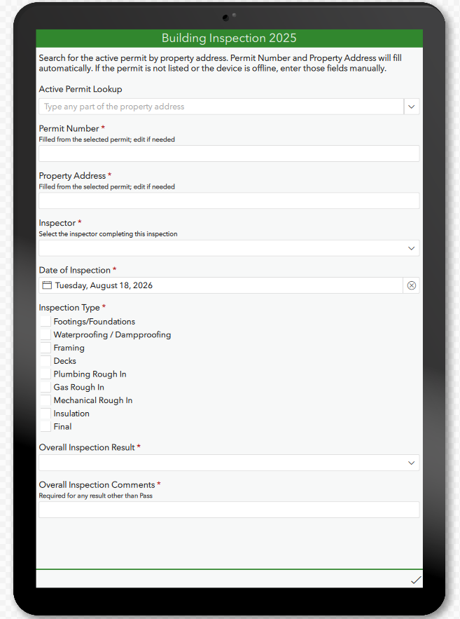
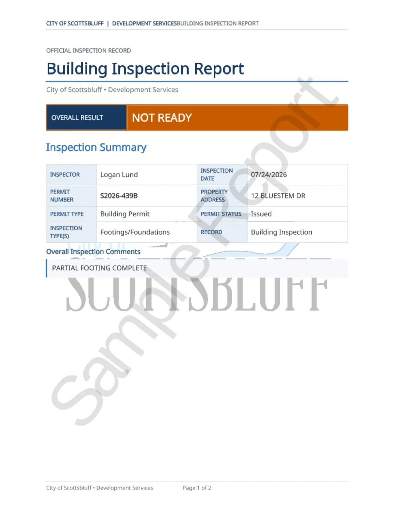

Permit lookup → field inspection → formatted report
Permitting & inspections
Digital development-services workflows
I mapped existing processes, configured permit and inspection workflows, built mobile forms and reports, tested the system, trained users, and supported the rollout.
An active-permit lookup fills the property details automatically, while manual entry keeps the inspection moving when a permit is unavailable or the device is offline. Completed inspections generate a consistent PDF record showing only the sections addressed in the field.
Survey123 · Workflow design · Report automation · Training